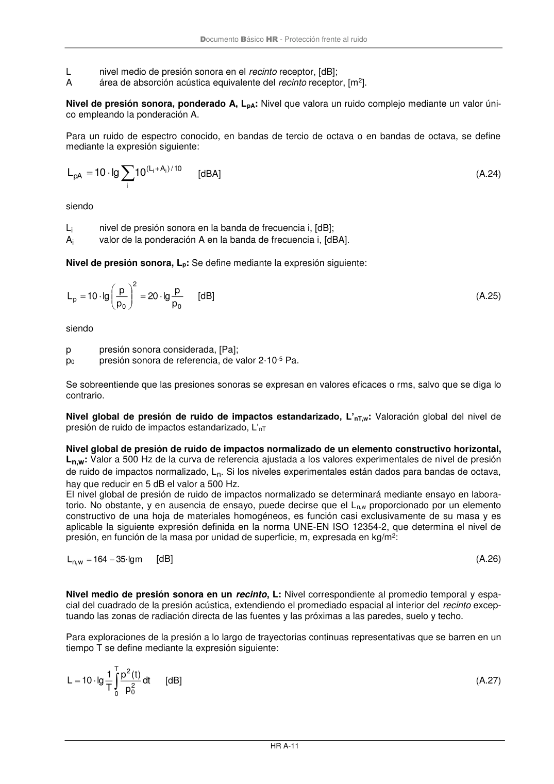
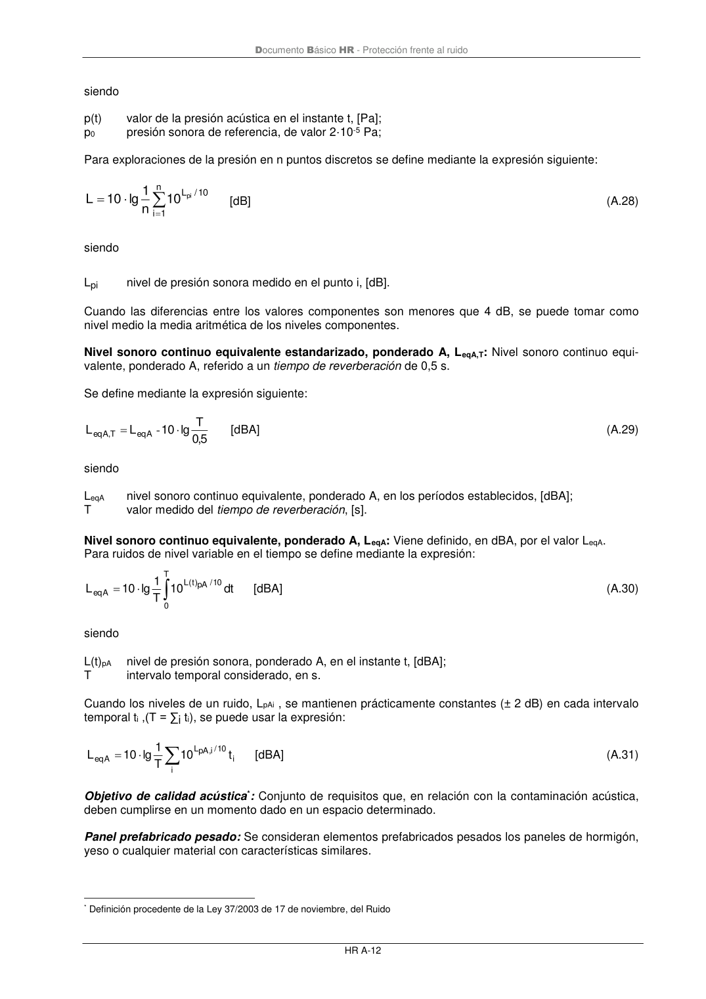

DB-HR · Fragmento de PDF p53 · versión 2019-12-20 · capa oficial
Formatos: JSON compacto · Markdown · PDF fuente
Ámbito del documento · texto del ámbito · documento y tablas
ID técnico a0104 · PDF pág. 53-54 · jerarquía no validada por persona · no es capítulo: sin_linea_de_encabezado · padre: raíz · literal original en el contenido: «»
+ = i 10 /) A L ( pA i i 10 lg 10 L [dBA] (A.24) siendo Li nivel de presión sonora en la banda de frecuencia i, [dB]; Ai valor de la ponderación A en la banda de frecuencia i, [dBA]. Nivel de presión sonora, Lp: Se define mediante la expresión siguiente: 0 2 0 p p p lg 20 p p lg 10 L = = [dB] (A.25) siendo p presión sonora considerada, [Pa]; p0 presión sonora de referencia, de valor 2·10-5 Pa. Se sobreentiende que las presiones sonoras se expresan en valores eficaces o rms, salvo que se diga lo contrario. Nivel global de presión de ruido de impactos estandarizado, L’nT,w: Valoración global del nivel de presión de ruido de impactos estandarizado, L’nT Nivel global de presión de ruido de impactos normalizado de un elemento constructivo horizontal, Ln,w: Valor a 500 Hz de la curva de referencia ajustada a los valores experimentales de nivel de presión de ruido de impactos normalizado, Ln. Si los niveles experimentales están dados para bandas de octava, hay que reducir en 5 dB el valor a 500 Hz. El nivel global de presión de ruido de impactos normalizado se determinará mediante ensayo en labora- torio. No obstante, y en ausencia de ensayo, puede decirse que el Ln,w proporcionado por un elemento constructivo de una hoja de materiales homogéneos, es función casi exclusivamente de su masa y es aplicable la siguiente expresión definida en la norma UNE-EN ISO 12354-2, que determina el nivel de presión, en función de la masa por unidad de superficie, m, expresada en kg/m2: m ·lg 35 164 L w ,n − = [dB] (A.26) Nivel medio de presión sonora en un recinto, L: Nivel correspondiente al promedio temporal y espa- cial del cuadrado de la presión acústica, extendiendo el promediado espacial al interior del recinto excep- tuando las zonas de radiación directa de las fuentes y las próximas a las paredes, suelo y techo. Para exploraciones de la presión a lo largo de trayectorias continuas representativas que se barren en un tiempo T se define mediante la expresión siguiente: = T 0 2 0 2 dt p )t( p T 1 lg 10 L [dB] (A.27) Documento Básico HR - Protección frente al ruido HR A-12 siendo p(t) valor de la presión acústica en el instante t, [Pa]; p0 presión sonora de referencia, de valor 2·10-5 Pa; Para exploraciones de la presión en n puntos discretos se define mediante la expresión siguiente: = = n 1 i 10 / Lpi 10 n 1 lg 10 L [dB] (A.28) siendo Lpi nivel de presión sonora medido en el punto i, [dB]. Cuando las diferencias entre los valores componentes son menores que 4 dB, se puede tomar como nivel medio la media aritmética de los niveles componentes. Nivel sonoro continuo equivalente estandarizado, ponderado A, LeqA,T: Nivel sonoro continuo equi- valente, ponderado A, referido a un tiempo de reverberación de 0,5 s. Se define mediante la expresión siguiente: 5,0 T lg 10 L L eqA T , eqA = - [dBA] (A.29) siendo LeqA nivel sonoro continuo equivalente, ponderado A, en los períodos establecidos, [dBA]; T valor medido del tiempo de reverberación, [s]. Nivel sonoro continuo equivalente, ponderado A, LeqA: Viene definido, en dBA, por el valor LeqA. Para ruidos de nivel variable en el tiempo se define mediante la expresión: = T 0 10 / pA )t( L eqA dt 10 T 1 lg 10 L [dBA] (A.30) siendo L(t)pA nivel de presión sonora, ponderado A, en el instante t, [dBA]; T intervalo temporal considerado, en s. Cuando los niveles de un ruido, LpAi , se mantienen prácticamente constantes (± 2 dB) en cada intervalo temporal ti ,(T = ∑i ti), se puede usar la expresión: = i i 10 /i, pA L eqA t 10 T 1 lg 10 L [dBA] (A.31) Objetivo de calidad acústica*: Conjunto de requisitos que, en relación con la contaminación acústica, deben cumplirse en un momento dado en un espacio determinado. Panel prefabricado pesado:Se consideran elementos prefabricados pesados los paneles de hormigón, yeso o cualquier material con características similares. * Definición procedente de la Ley 37/2003 de 17 de noviembre, del Ruido


PDF fuente redistribuible: copia fiel enlazada en esta página (SHA256 verificado).